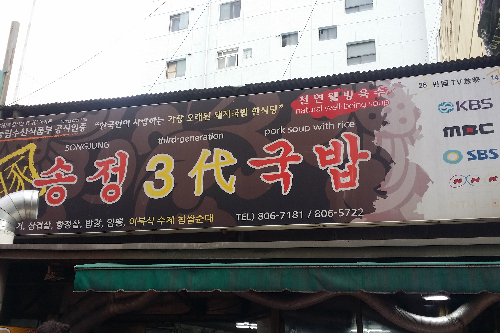
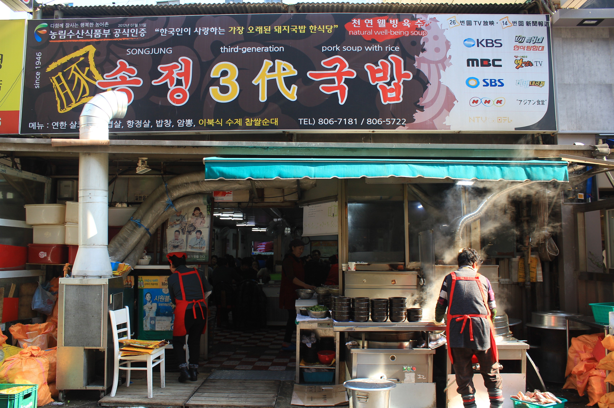
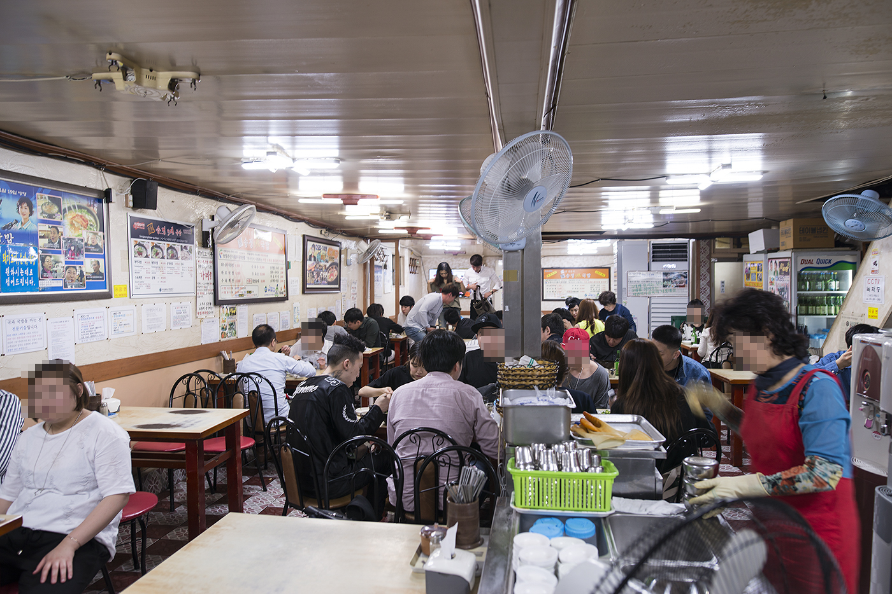
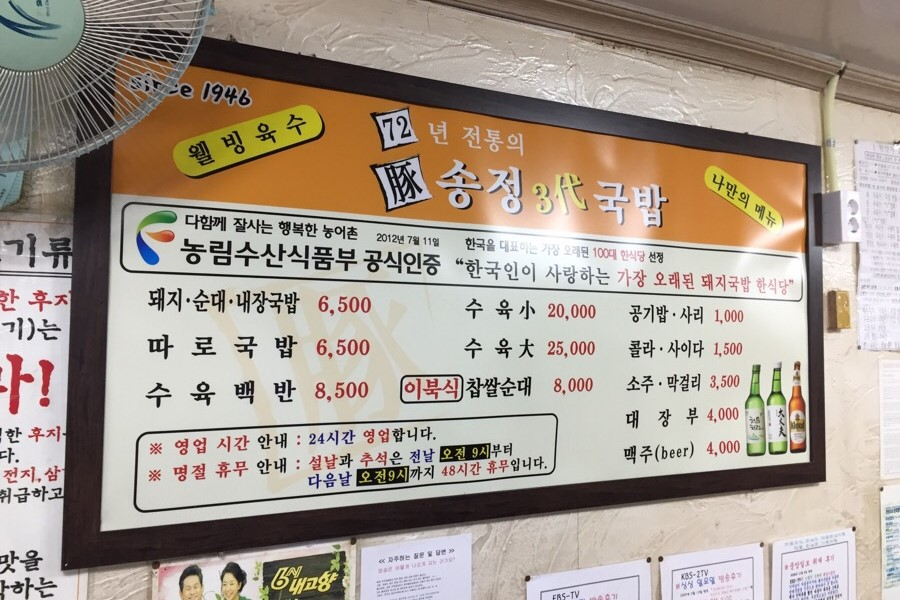
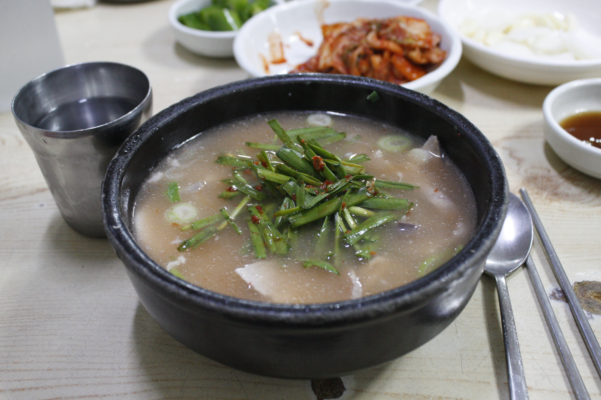
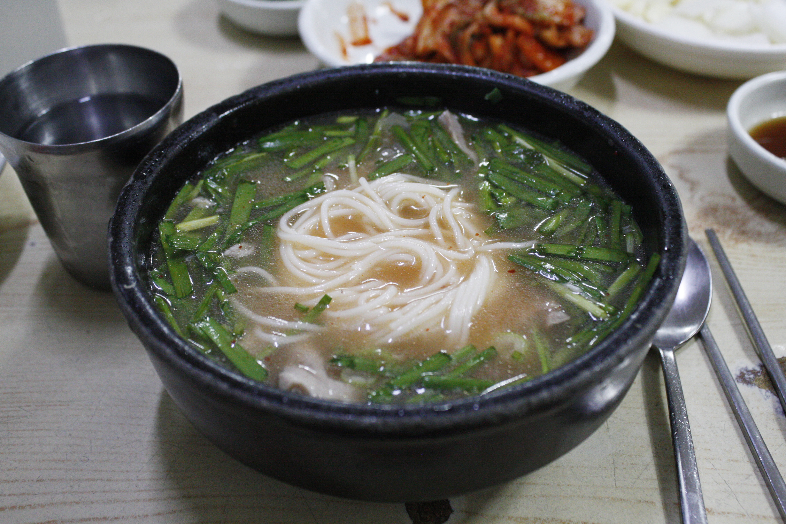
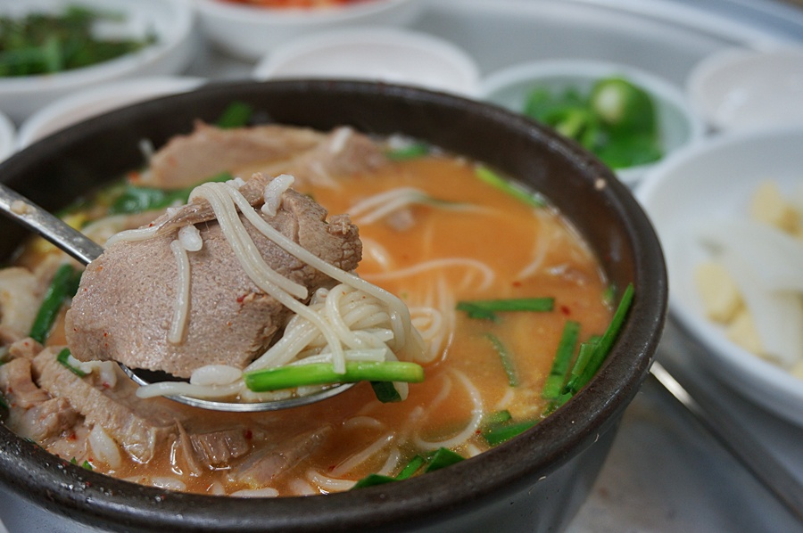
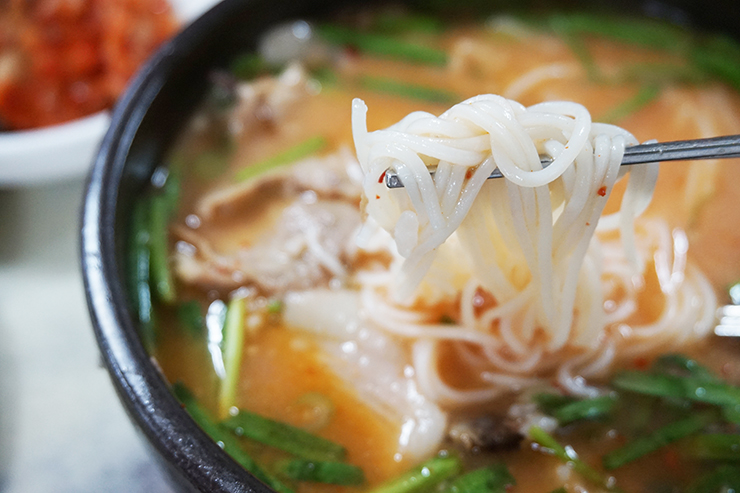

 
서면시장 국밥골목에 위치한 송정3대국밥, 국밥골목이기에 다른 가게도 많지만 유독 이 가게만
제일 유명하다. 간판만 봐도 여러 방송사에 나왔다는걸 알 수 있고 검색만해도 관련 정보가 엄청 많이 뜬다.
어느 국밥집들이 그러하듯 가게 앞에서 하루종일 국밥육수를 우리고 있는 모습..
 
들어가면 항상 이렇게 많은 인원은 아니지만 밥 시간때에는 정말 많이 온다 특히 요즘 같은 추운 날씨엔
밖에서 얼었던 몸을 따뜻한 국물에 녹이고자 많이들 찾아온다. 메뉴를 보면 1946년부터 아주 오랫동안 장사를 해오셨다는걸 알 수 있다.
그 밖의 어느 국밥집을 가도 있을만한 메뉴는 다 있다. 영업시간은 24시간 하루종일 영업하는듯하다.
 
이 집에서 유명한 닭두루치기, 갖은 야채, 닭과 당면으로 빨간 양념이 흘러
넘칠 정도로 푸짐하게 주어 성인 두 명이 배부르게 먹을 수 있는 양
 
양념의 맛이 강하지만 쫀득한 당면과 부드러운 닭고기로 씹는 맛도 좋아
밥이랑 게속 먹게되는 중독성이 있고 다 건져먹고 남은 국물과 밥을 같이 먹는것도 일품이니
당감시장에 오면 한번 먹어보는것을 추천합니다.